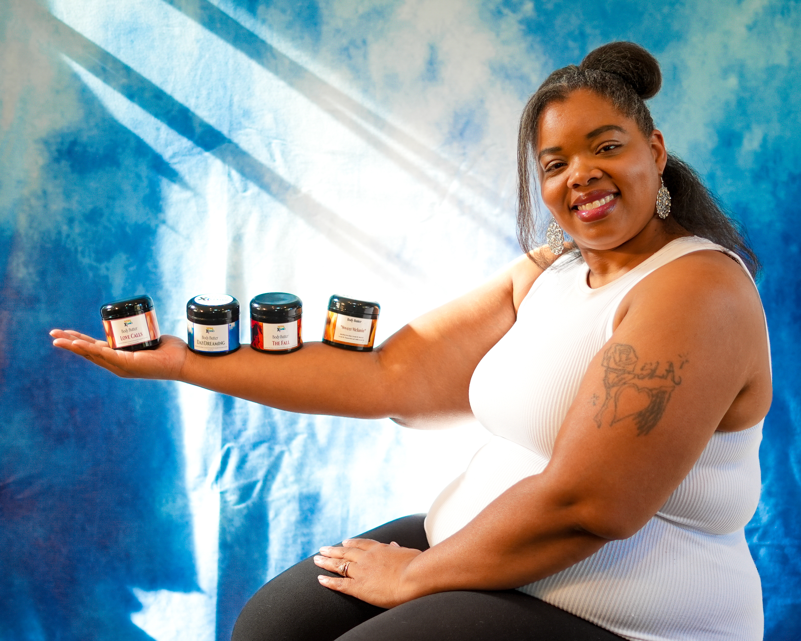
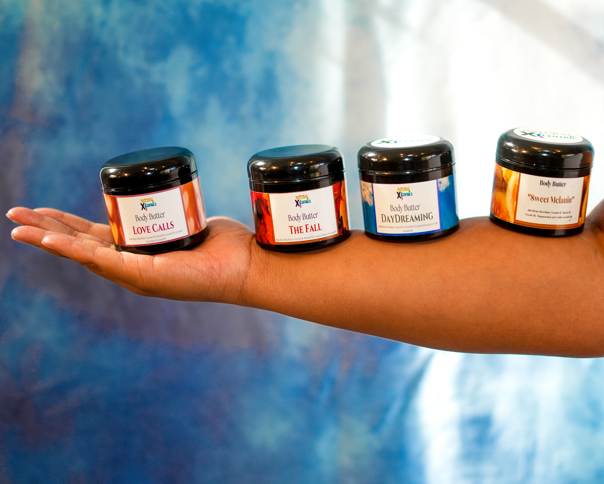
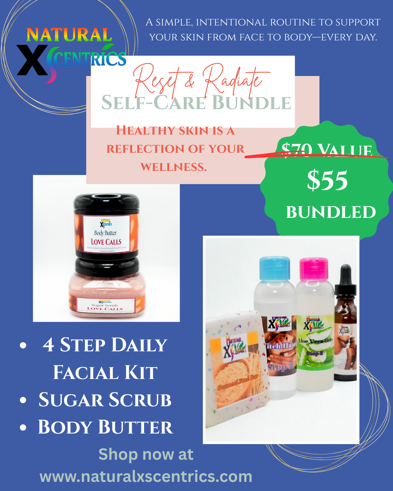

Bestseller
4 Step Face Kit
A simple daily facial routine for cleansing, exfoliating, nourishing, and moisturizing.
Get routine tipsBlack-owned natural skincare for the whole family
Natural XScentrics helps busy families build consistent self-care routines with handcrafted skincare, founder-led education, and products made with purpose by Tiffany Palmer.

Meet Tiffany Palmer
Tiffany brings a Bachelor of Science background and over 10 years of chemical and manufacturing experience into Natural XScentrics. The result is a brand that feels warm and personal while still respecting process, documentation, consistency, and product quality.
Explore the founder storyShop by routine
The storefront should lead with the easiest decisions: bestsellers, bundles, and product categories tied to real skincare routines.
A simple daily facial routine for cleansing, exfoliating, nourishing, and moisturizing.
Get routine tips
Rich, whipped moisture for soft, comfortable, healthy-looking skin.

Giftable self-care sets for moms, teens, spouses, and the whole home.
Routine quiz preview
A short quiz can turn unsure visitors into email subscribers and recommend a starter routine based on their needs.
Education first, product second
Ingredient explainers, routine tips, and product care guidance written in a warm founder voice.
Batch prep, labeling, vendor events, and manufacturing moments that build credibility.
Self-care through consistency, family routines, faith-friendly encouragement, and real life balance.
Growth pathways
Natural XScentrics can stay affordable and community-centered while creating premium opportunities through services, vendor events, wholesale, and private-label manufacturing.
Travel and self-care
This page can connect Tiffany's travel business to the skincare lifestyle: wellness getaways, spa-inspired trips, mother-daughter travel, and content trips that still feel aligned with Natural XScentrics.
Join the travel and self-care list
Income replacement lens
Community offer
Join the NXS community for skincare tips, product drops, vendor event updates, travel/self-care notes, and founder-led education.